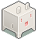

About
About Projects
Projects Kids Books
Kids Books Games
Games Stories
Stories Store
Store Collection
Collection Notes
NotesKokorobot is a portmanteau of kokoro (heart, in Japanese) and robot to mean robot heart. It is meant to have a French pronunciation. It dates back to 2011, see the former logo[95.4 kB] for the website.
{kind=link}
I, rek, live aboard the sailboat pino somewhere in the Salish Sea. See what books I'm reading right now, and what tools I'm using.
This website has no tracking or analytics.
Website concepts

Above is the rough concept for the menu icons of kokorobot.ca. I sketched them on paper, photographed them with a shitty laptop camera and cleaned it up in Krita.
Licenses
DO NOT resell or mint my work.
The license applies to all the documented projects, the projects themselves and their assets. The website source code is under the MIT License. The assets and text content is under the BY-NC-SA4.0 License.
Politics
A short post to make it clear where I stand as a person, and with my work.
I am committed to fighting normative violence, fascism, colonialism, and white supremacy in all of its forms. To undermine the capitalist structure and its abusive scripts about human worth in relation to work, productivity, and ownership. To subvert oppressive gender norms and put in question the binary. To actively unlearn biased and colonial thinking.
I am aggressively opposed to racism, sexism, homophobia, transphobia, nationalism, ethnocentrism, religious fundamentalism, and oppressive and coercive power structures of all kinds.

Some of the wording borrowed from the fantastic Blood and Dust project.